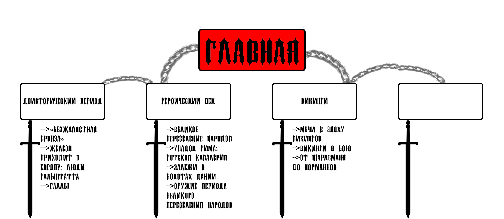

Данный сайт был создан для тех, кто увлекается оружеем средневековья, либо хотел бы побольше узнать об истории того, как и где было распространенно то или иное оружее.
Область оружия и брони окружена романтическими легендами, чудовищными мифами и широко распространёнными заблуждениями. Источниками их часто является недостаток знания и опыта общения с настоящими вещами и их историей. Большинство из этих представлений абсурдны и не основаны ни на чём.
Каждый отдел сайта обладает собственным меню, для облегения навигации пользуйтесь картой сайта.
